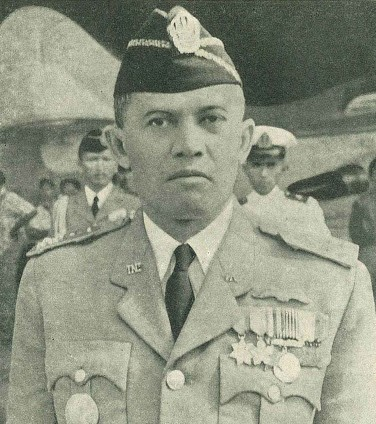

BAB V
Tokoh Nasional Indonesia
6. Abdul Haris Nasution (1918-2000)
| Abdul Haris Nasution dilahirkan di Sumatera Utara pada 3 Desember 1918. Ia menempuh pendidikan di HIS dan HIK di Yogyakarta, kemudian AMS di Jakarta. Setelah lulus, ia kembali ke Bengkulu, Sumatra menjadi guru. Di bengkulu, Nasution tinggal dekat rumah pengasingan Soekarno dan kadang berbicara dengannya. |
|
Setahun kemudian, ia melanjutkan mengajar di Tanjung Raja, dekat Palembang. Namun, ia lebih tertarik dengan dunia militer sehingga berhenti mengajar dan masuk Akademi Militer di Bandung. Pendidikan militernya berhenti karena Jepang masuk Indonesia pada 1942.
Setelah RI merdeka, Nasution kembali ke dunia militer. Ia diangkat menjadi Komandan Divisi III TKR Bandung. Setelah reorganisasi Tentara Negara Indonesia, ia menjadi Komandan Divisi I Siliwangi Bandung. Nasution juga sempat memerintahkan Divisi Siliwangi hijrah ke Yogyakarta pada 1948 sebagai wujud Persetujuan renville. Di Yogyakarta, ia diangkat sebagai Wakil Panglima Besar/Kepala Staf Operasi MBAP. Selanjutnya, Nasution menjadi Panglima Komando Jawa hingga 1949. |
 |
|
Setelah KMB, Nasution diangkat menjadi Kepala Staf Angkatan Darat (KSAD). Pada 17 Oktober 1952, Nasution dicabut dari jabatan KSAD karena melaksanakan reorganisasi di tubuh militer yang menimbulkan perpecahan. Tetapi karena masih dianggap memiliki kompetensi kepemimpinan militer, ia ditunjuk kembali menjadi KSAD pada 28 Oktober 1955.
Pada tahun 1965, terjadinya Gerakan 30 September yang dilakukan PKI dengan tujuan menangkap tujuh orang jenderal, salah satunya A.H. Nasution. Nasution berhasil lolos dari upaya penculikan dan pembunuhan, tetapi putrinya, Ade Irma Suryani, tertembak berondongan senjata PKI. Setelah G30S/PKI, Nasution mendapat jabatan sebagai ketua MPRS. A.H. Nasution merupakan salah satu tokoh yang memiliki banyak peran dan berjasa terhadap RI. Pada peringatan Hari ABRI 5 Oktober 1997, Nasution dianugerahi pangkat kehormatan jenderal besar bersama Soedirman oleh Presiden Soeharto. Jenderal Besar Abdul Haris Nasution wafat pada 6 September 2000 di Jakarta. Beliau dimakamkan di Taman Makam Pahlawan Kalibata, Jakarta. |